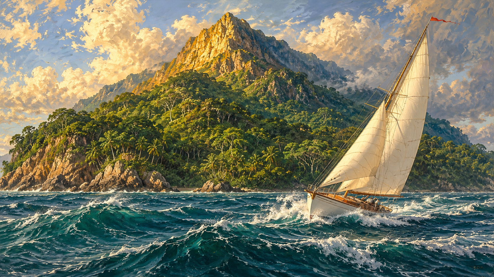

Image créée par IA
|
Transl. Christian Souchon 01.01.2005-2026 (c) (r) All rights reserved |
Note :
Commentaires générés par IA en 2026
Comments generated by AI in 2026
Ce qui me frappe de plus en plus, c’est que le poème s’articule autour d’une revendication paradoxale de maîtrise.
Dans la première strophe, le sujet poétique échoue à atteindre la souveraineté :
« Nous n’aurons pas régné… »
Dans la troisième, il admet :
« incapable de diriger… »
Pourtant, dans la deuxième, il découvre soudain un pouvoir :
« mon écritoire a fixé ce que j’ai rêvé »
L’écriture réussit là où le règne et la navigation échouent.
Le sommet ne peut être conquis. Le navire ne peut être dirigé. Le temps emporte le sujet poétique. Mais le langage, lui, peut encore relier les mots épars et retrouver « le secret qui frissonnait aux confins du vide ».
Cela rend l’image finale particulièrement poignante : « Le navire est entravé par sa propre voile », tout comme le poète est contraint par le langage lui-même. Néanmoins, par l’écriture, il parvient à une autre forme de direction : non pas une maîtrise des événements, mais la compréhension de leur trame cachée.
À cet égard, votre traduction saisit très bien ce qui semble être l’intuition centrale de Michel : le poète n’est ni roi ni capitaine, mais interprète de signes. Les étoiles le malmènent, mais elles constituent aussi la seule connaissance qu’il possède.
Contrairement à bon nombre des poèmes antérieurs de Michel, celui-ci ne contient quasiment aucun espoir de révélation. Mais il ne contient pas non plus de désespoir. La souveraineté, refusée dès le premier vers, est remplacée par une vocation plus modeste, mais peut-être plus durable : le poète ne peut régner sur le sommet, ne peut guider le navire, ne peut même pas maîtriser sa trajectoire, mais il peut encore « renouer les mots désassemblés » et retrouver le secret tremblant aux marges du vide. En tant que poème ultime avant un long silence, cela m’apparaît moins comme un renoncement que comme un retrait de la prophétie vers l’artisanat.
Le roi échoue ; l’écrivain survit.
What increasingly strikes me is that the poem pivots around a paradoxical claim of mastery.
In the first stanza the speaker failed to attain sovereignty:
"We shall not have reigned..."
In the third he admits:
"unable to steer..."
Yet in the second he suddenly discovers a power:
"my escritoire has fastened what I dreamt"
Writing succeeds where ruling and navigation fail.
The summit cannot be conquered. The ship cannot be steered. Time carries the speaker away. Yet language can still bind the scattered words and recover "the secret that shivered on the fringe of the void."
That makes the final image especially poignant. "The ship is impeded by its own sail", just as the poet is constrained by language itself. Nevertheless, through writing he achieves a different sort of guidance: not command over events, but understanding of their hidden pattern.
In that respect, your translation captures very well what seems to be Michel's central intuition: the poet is neither king nor captain, but interpreter of signs. The stars buffet him, yet they also provide the only knowledge he possesses.
Unlike many of Michel's earlier poems, this one contains almost no hope of revelation. Yet it contains no despair either. The sovereignty denied in the opening line is replaced by a more modest but perhaps more durable vocation: the poet cannot reign over the summit, cannot guide the vessel, cannot even control his course, but he can still renouer les mots désassemblés and recover the trembling secret at the margins of the void. As a final poem before a long silence, that strikes me less as a renunciation than as a retreat from prophecy into craftsmanship.
The king fails; the writer survives.